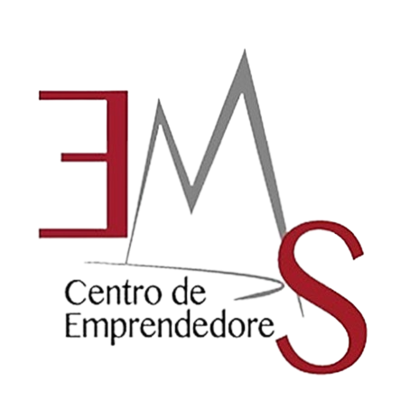
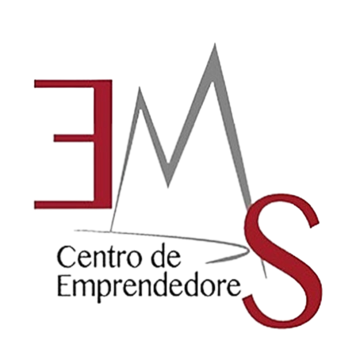

El grupo de centro de emprendedores se encarga de formar, capacitar y desarrollar las competencias del alumnado que cursan los últimos semestres de su carrera, con el objeto de que, al ser egresado, tenga las habilidades suficientes para implementar y desarrolar sus propios emprendimientos.
Objetivos específicos:
El Modelo opera en cuatro componentes:
El primer componente se enfoca en el ser, en el desarrollo de capacidades y habilidades que configuran una persona emprendedora; se logran mediante el desarrollo de 5 competencias:
Se trata de una sinergia entre el Gobierno y las organizaciones de la Sociedad Civil y los Subsistemas de la Educación Media Superior, a fin de fomentar una Cultura Emprendedora en nuestros jóvenes. Para lograrlo, MEEMS: Consta de 2 Módulos, que suman un total de 54 horas el programa, para la formación en competencias emprendedoras:
Durante 18 sesiones (1 hora por semana) el estudiante conoce quién es un emprendedor, trabaja en el desarrollo de la autoestima y la creatividad, fomenta el reconocimiento de capacidades personales, identifica situaciones sociales, ambientales y económicas para realizar una práctica emprendedora
En 36 sesiones (2 horas por semana) los estudiantes diseñan e implementan un plan emprendedor con impacto social, ambiental y económico; lo presentan ante un panel de expertos y lo implementan durante 10 semanas, con el apoyo de mentores, el acompañamiento del docente facilitador y de talleres temáticos impartidos por personalidades del ecosistema emprendedor.